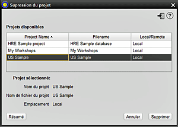

Cet écran permet à l'utilisateur de supprimer un projet surplus. Notez que le projet ne peut pas être actuellement ouvert dans HRE - il doit être premièrement fermé. 1. Sélectionnez le projet que vous souhaitez supprimer. Le nom du projet, le nom de fichier du projet et l'emplacement seront ensuite renseignés sous le tableau de sélection 2. Pour être sûr, il sera judicieux à ce moment de vérifier le Résumé du projet 3. Si vous continuez, appuyez sur Supprimer 4. Conserver la base de données: vous serez invité à indiqué si vous souhaitez de conserver le fichier de base de données (lors de la suppression de la référence du projet HRE) ou supprimer les deux. Répondez Non pour tout supprimer ou Oui pour conserver le fichier de base de données. |
|
Sujets Relatifs |